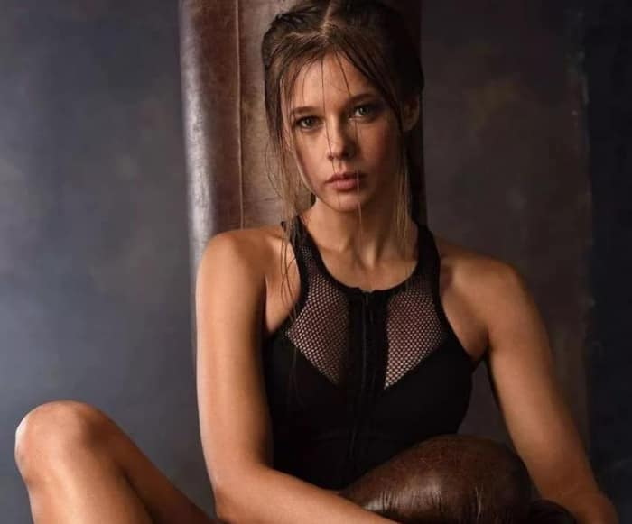

Біографія
Народилася 29 жовтня 1985 року в Пермі. Батьки: мати - Галина Федорівна Карповська, адвокат; батько - Анатолій Васильович Шпица. До 13 років жила в Інті (Республіка Комі). Навчалася в експериментальній французької гімназії з поглибленим вивченням іноземних мов. У 1998 році вступила в театр-студію «КОД» (Перм). Навчалася на юридичному факультеті Пермського державного університету [3] [4]. З п'ятнадцяти років працювала в Пермський камерний театр «Нова драма» під керівництвом М. А. Оленьово. З 2005 року - в Москві, знімається у фільмах, працює в московському державного музичному театрі національного мистецтва під керівництвом Володимира Назарова. Співпрацює з товариство вільних артистів. У вересні 2013 року актриса склала пару на телешоу «Льодовиковий період» з Максимом Стависький. Після закінчення 9-го етапу пара отримала приз глядацьких симпатій.
Особисте життя
Була одружена з 2010 року за актором і каскадером Костянтином Адаев (рід. 14 березня 1975). Син - Герман Костянтинович Адаев (рід. 25 лютого 2012). Через деякий час після народження сина пара розлучилася. Зустрічалася з кінорежисером Марюс Вайсберг, розлучилася з ним в серпні 2015 года [5]. У 2018 р вийшла заміж за бізнесмена, директора мережі фітнес-клубів Руслана Панова [6].
Мистецтво
Ролі в театрі
- «Чайка» А. П. Чехова
- «Страсти по Шекспиру»
- «Елизавета Бам» — Гладкова Анастасия Дмитриевна
- «Приключения маленькой ведьмы»
- «Сказки?… Сказки!…»
- «Ала ад-Дин» — служанка Нур
- «Родник в пустыне» — Белый Лис / Кошка Короля
- «Тень» Е. Шварца — Аннунциата
- «Калигула» — Друзилла
- «Ромео и Джульетта» — Джульетта
Ролі в кіно
- 2008 — Принцесса цирка — Маша, возлюбленная Чпока
- 2008 — Синие ночи — Оля, пионерка
- 2009 — Катя: Военная история — Катя
- 2009 — Колдовская любовь 2 — Наташа
- 2011 — Огни притона — «Зинка-Гитлер»
- 2012 — Метро — Алиса
- 2013 — Реальные пацаны — Ира, старший менеджер магазина бытовой техники
- 2014 — Куприн. Яма — Люба
- 2014 — Поддубный — Маша, возлюбленная Поддубного
- 2014 — Ёлки 1914 — фигуристка Ксения
- 2015 — Молодая гвардия — Любовь Шевцова
- 2016 — Экипаж — Виктория, бригадир бортпроводников
- 2016 — Пятница — Вера
- 2016 — Завтрак у папы — Юлия Полонская, мама Али
- 2016 — Ёлки 5 — Женя
Галерея
